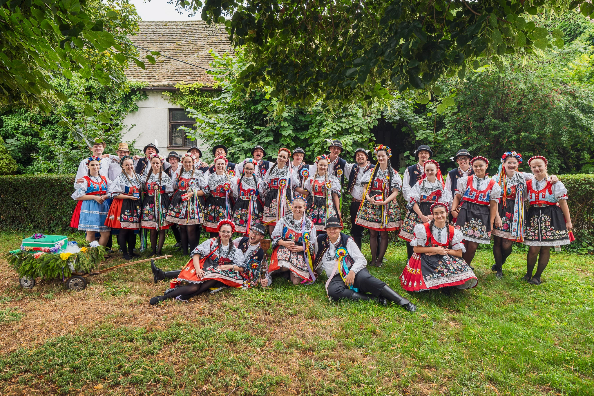
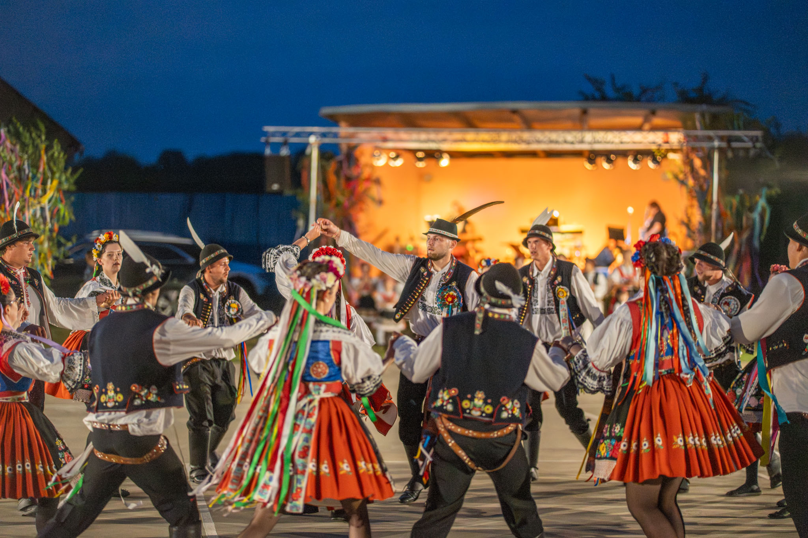
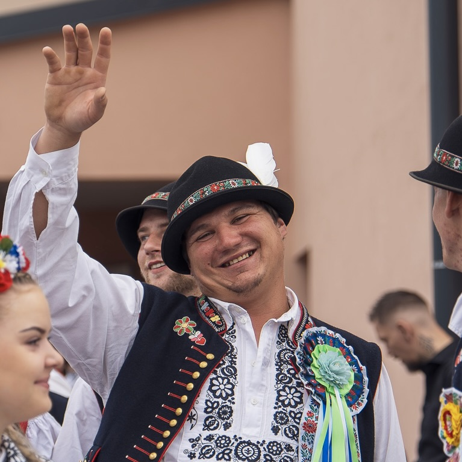
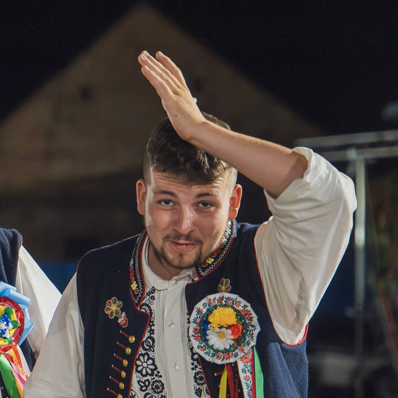
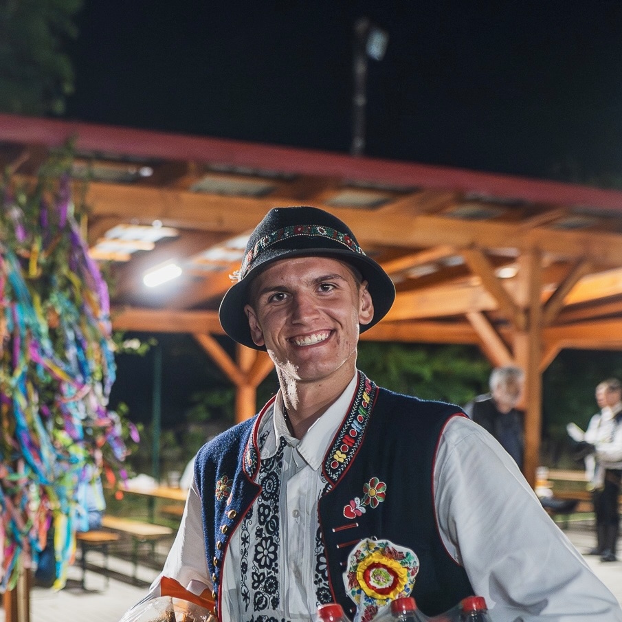

Mackovská chasa
Udržujeme tradice krojovaných hodů
v srdci Jižní Moravy.

Naše akce
Krojované hody
Mackovice 2026
Tradiční krojované hody s průvodem, cimbálovou muzikou a bohatým programem pro celou vesnici. Přijďte prožít den plný moravské pohody.
Celý program
Minulé ročníky
Tradice, které
žijí dál
Mackovská chasa z. s. je spolek z Mackovic v okrese Znojmo, jehož posláním je udržovat a rozvíjet tradici krojovaných hodů — jednu z nejkrásnějších součástí folklórní kultury Jižní Moravy.
Pořádáme krojované hody, zachováváme lidové zvyky a sdružujeme nadšence, kteří chtějí, aby tyto tradice žily i pro budoucí generace.
Naše kořeny
Krojované hody v Mackovicích mají hluboké kořeny v moravské folklorní tradici. Spolek Mackovská chasa z. s. vznikl s jediným cílem — udržet tuto tradici živou a předat ji dalším generacím.
Naši předkové slavili hody jako poděkování za úrodu a příležitost k setkání celé komunity. My navazujeme na tuto tradici a obohacujeme ji o nové prvky, přičemž zachováváme její autentickou duši.
Naše chasa
Lidé, kteří stojí za Mackovskou chasou a udržují tradici krojovaných hodů živou.
Výbor spolku


Členové


Stanovy
spolku
Stanovy Mackovské chasy z. s. upravují účel a cíle spolku, podmínky členství a organizační strukturu.
Stáhnout stanovy"Účel spolku je podpora a rozvoj tradičních lidových zvyků v obci Mackovice a okolí, zejména krojovaných hodů a zapojení lidí do kulturního života prostřednictvím pořádání tradičních akcí."
Stanovy spolku, čl. 1